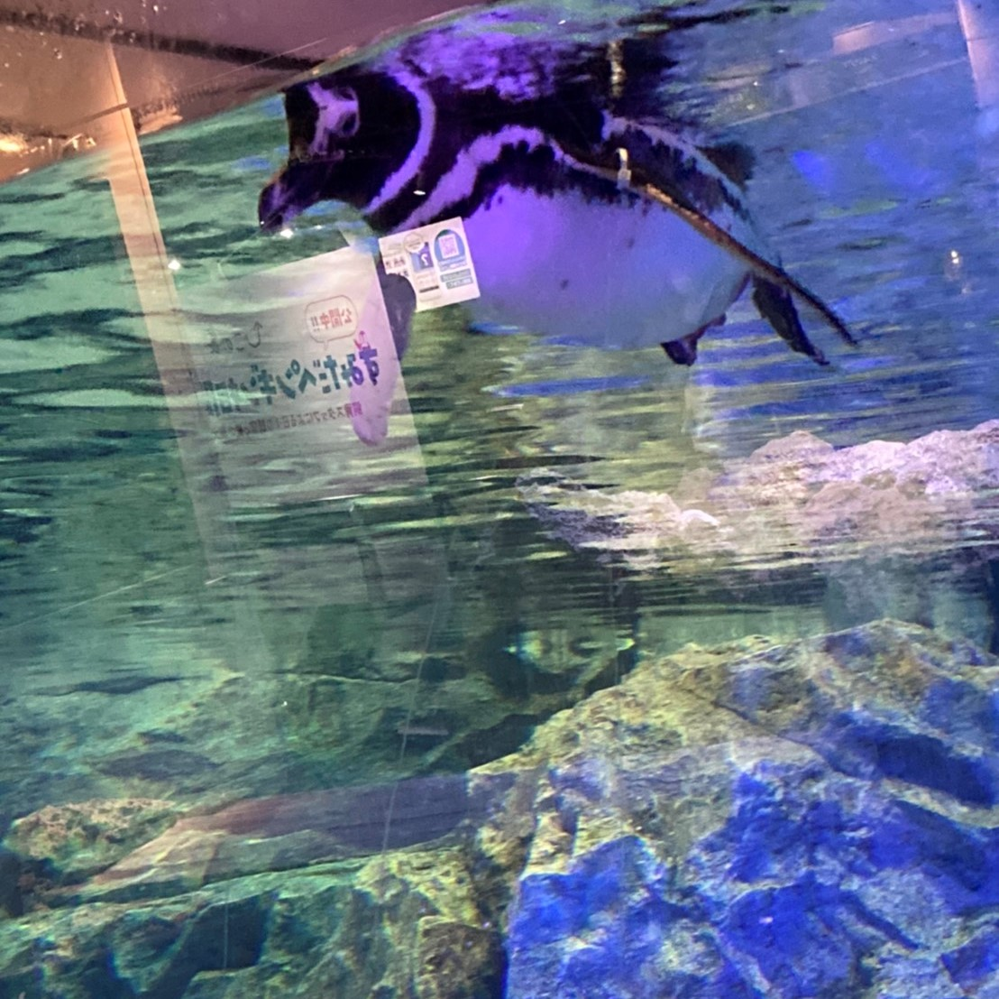
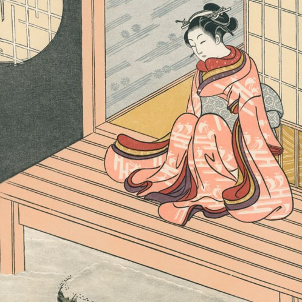
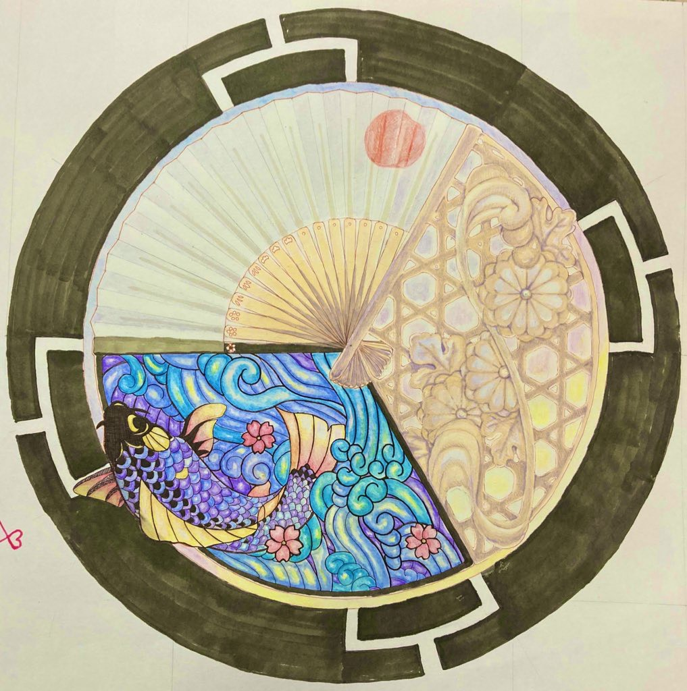
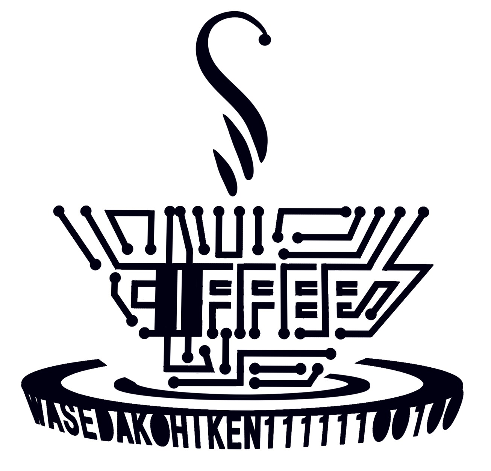

MYPROFILE
UNE
- BIRTHDAY: April
- UNIVERSITY: Waseda
- DEPARTMENT: Literature
- MAJOR: History Of Art
- CLUB: Waseda Coffee Society
WHAT I LIKE
01PENGUIN

ペンギンは私の一番好きな動物、もはやパーソナリティの一部といっても過言ではありません。丸みを帯びたフォルム、ペタペタ歩きと俊敏な泳ぎのギャップ。ペンギンの魅力は数知れず。
ちなみに最推しは「アデリーペンギン」。目つきの悪さが特徴的な子です。
02COFFEE
03HARUNOBU

私は大学で美術史を専攻しています。
美術史を学びたいと思ったきっかけ、それは「鈴木晴信」という画家との出会いでした。彼の作品は「錦絵」と呼ばれ、のちの浮世絵へ文化の発展に繋がりました。柔らかい線で描き出される植物と少女は、アールヌーヴォーを彷彿とさせます。
…彼は春画も描いているわけですが、ここでは触れないでおきましょう（）
GARALLY
01MEDALS
- 
- 
小さい頃から、娯楽施設や観光地を訪れた際は必ずメダル自販機を探します。水族館のメダルが多いのは、もちろん、ペンギンによく合いに行くから。
02WORKS
-
2021新年の初描き -
2021新年の初描き
お絵かき、裁縫、アクセサリー、、
手を動かして何かを形づくっている時間が一番楽しいです。